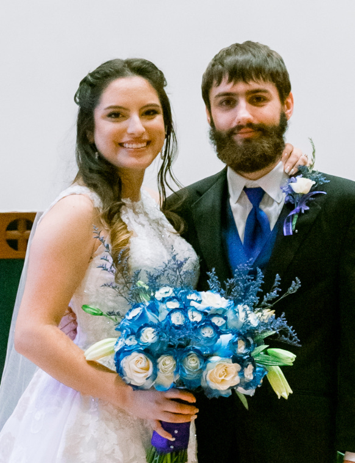

Personal info
Please feel free to enjoy these facts about me!
- I'm ? old.
- I've been happily married to Alicia Torres Hoza for ?. Buy a cookie cake from her!
- I have two sisters, two brothers, two brothers-in-law, and two sisters-in-law.
- I'm about 5' 5" tall, much like the average man in North Korea or the average woman in Sweden.
- I have Celiac disease.
Here are some of my views, in case you're curious (or looking for something to disagree with me about).
Philosophical views
- I'm Catholic.
- I think that every living human organism has moral personhood.
- I am a compatibilist. (Here's a relevant blog post.)
- I am a Bayesian.
- I am a B-theorist.
Political views
⚠️Chances are, whether you lean "left", "right", or some other direction, you are going to disagree with me about some of this stuff. I hope we can still be friends! Please trust that I want us all to thrive. I'm sure I'm wrong about some things.
I'm a member of the American Solidarity Party. My views on some specific U.S. issues:
- I favor making it very easy to legally immigrate to the U.S. I want the border between the U.S. and Mexico to be similar to the border between Texas and New Mexico. I don't think any special excuse or reason should be required to become a U.S. citizen.
- I support a ban on the destruction of human embryos in laboratories, e.g. in the context of stem cell research or in vitro fertilization. I think we all have dignity and value that doesn't depend on the circumstances of our conception, and I respect persons conceived in vitro as equals, whether they are embryos or adults.
- I favor repealing the second amendment. In the meantime, I support strict gun control laws that are consistent with the second amendment.
- I support a ban on abortion. I think we should use nonviolent methods to support pregnant women. I support government-funded pregnancy centers, and I think the government should ensure that all employed new mothers have access to paid maternity leave. (Here's a relevant blog post. See also: What's My Pro-Life Line?)
- I favor abolishing capital punishment. I also think the prison system is greatly overused. People who commit crimes should face consequences, but years of imprisonment is extreme.
- I support a ban on physician-assisted suicide and all forms of euthanasia.
- I favor giving every citizen the right to vote, regardless of age or criminal history. Yes, I'm serious, regardless of age.
- I favor making adultery illegal, at least in cases where the non-participating spouse disapproves.
- I support extensive government regulations and programs designed to protect the environment.
- I oppose civil same-sex marriage institutions. I recognize that there is nothing shameful about being gay or lesbian or bisexual. I think sexual minorities are among those most harmed by same-sex marriage. I support legislation that protects sexual minorities from unjust discrimination and harrassment.
- I oppose torture. More generally, I oppose almost all violent actions performed by the U.S. military. I am grateful for the service of those members of the military who honorably and ethically defend the country.
- I support constitutional originalism.
- I support extensive welfare programs.
- I support serious free speech protections at public universities.
- I oppose efforts by the NSA to weaken widely-used cryptographic software.